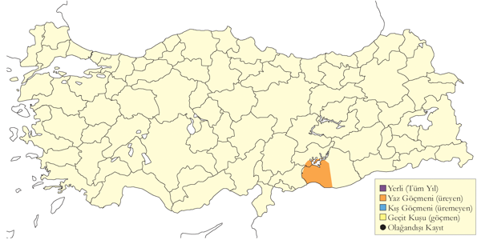
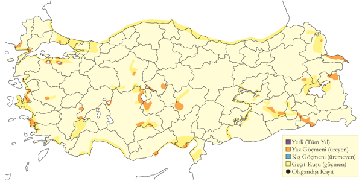
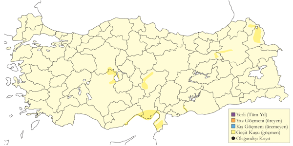

7 Çullukgiller
Çulluk
Scolopax rusticola
Eurasian Woodcock
Yaygın ve çok sayıda bulunan geçit türü ve kış konuğudur.
En sık olarak eylül başından mart sonuna kadar kaydedilir ancak bir kısmı kışlama alanlarına kasım öncesinde gelir. Kuzeydoğudaki dağ vadileri, Uludağ ve Toroslar’daki geçit alanlarında zaman zaman kaydedilir. İlkbahar geçişi nisanın ilk haftasının sonuna kadar devam edebilir. Türün en önemli kışlama alanları nemli çayırlarda ve dere boylarında yoğun olarak avlandığı Karadeniz ve Marmara’dadır. Bu mevsimde İç Anadolu, Ege ve Akdeniz’de de az sayılarda bulunur ve Aralık ayında Van Gölü yakınlarında da bir defa kaydedilmiştir.

Üreme
Nisan 1992’de Kızılırmak Deltası’nın ormanlık alanlarında 17 Nisan’da gözlenen, kürek çekercesine yavaş kanat çırparak gerçekleştirdiği kur uçuşunun da gözlendiği dört kaydı vardır (Hustings & Dijk, 1994). Hustings ve van Dijk tarafından aynı mevsimde başka gözlemlerin olmaması nedeniyle üreme olasılığını reddedilmiştir.
Alttürler ve Sınıflandırma
Monotipik bir türdür.
Küçük Suçulluğu
Lymnocryptes minimus
Jack Snipe
Yaygın ancak seyrek rastlanan geçit türü ve kış konuğudur.
Eylül ile nisan sonu arasında tuzcul bataklıklar ve benzeri kıyı alanlarında ve iç kesimlerdeki her tür sulakalanda ve diğer nemli alanlarda bulunur. Çoğunlukla tek başına gözlenir, ara sıra birkaç bireylik (en fazla 12) gevşek gruplar kurar. Göçmenler Doğu Karadeniz Bölgesi’nde da kaydedilmiştir (Kumerloeve 1967a, Faldborg 1994).
Nispeten az sayılarda gözlenmesi ciddi şekilde var olduğundan daha az sayıda kaydedildiğini ya da gerçekten seyrek olduğunu düşündürür. Uygun alanlarda gerçekleştirilen yoğun araştırmalarda zaman zaman daha sık gözlenmiş olması birinci olasılığı güçlendirmektedir. Örneğin, Mart 1990’da Çukurova’da 31 birey (Kivit vd. 1994) ve ilkbahar 1992 başlarında Kızılırmak Deltası’nda 15 birey (Hustings & Dijk, 1994) kaydedilmiştir. Ayrıca, 2001 ve 2002 yıllarında Kulu Gölü’nde yapılan gözlemlerde oldukça düzenli bir geçit türü olduğu düşünülmüştür (Richardson 2003).

Üreme
Türkiye’de yuvalamaz.
Alttürler ve Sınıflandırma
Monotipik bir türdür.
Büyük Suçulluğu
Gallinago media
Great Snipe
Yaygın ancak nadir geçit türüdür.
Tarım alanlarını ve sulakalan kenarlarını kullanır.
Kirwan (1992a), 1966 sonrasındakilerin tümünün detayları da dâhil olmak üzere 1990 öncesindeki tüm mevcut kayıtları listelemiştir. Modern kaydetmenin başlamasından sonraki 73 kaydın (140 bireye ait) yaklaşık %50’si (kaydedilen bireylerin %60’ından fazlası) sadece dört alanda elde edilmiştir: Çukurova ve Göksu deltaları ile Güney Van Sazlıkları ve Murat Vadisi’nin Bulanık Balatos bölgesi Sonradan yayınlanan yaklaşık 60 kayıt dikkate alındığında, yoğunluğu mayısta olmak üzere ilkbahar göçü 2 Mart ile 8 Haziran arasında ve sonbahar göçü ise eylül sonu ile ekimde zire yaparak 2 Ağustos ile 8 Ekim arasında gerçekleşir. Zaman zaman 9 bireye kadar küçük gruplar halinde gözlenirken bir defasında, Eylül 1982’de Van Sazlığı’nda, toplam 30 birey kaydedilmiştir.
Kışın İç Anadolu’da (1969 Ocak ortasında Akşehir’de bir birey) ve güney kıyılarında (1970 Ocak sonlarında Tarsus Deltası’nda iki birey) kaydedilmiştir.
Ülke genelinden göç sırasında kaydedilen sayılar geçtiğimiz yüzyıl boyunca neredeyse kesinlikle azalmıştır. Bu durum türün hem sayısında hem de yayılışında görülen genel azalmayla paraleldir. Mathey-Dupraz (1923) türün Boğaziçi’nde düzenli bir geçit türü olduğunu, Schrader (1891) türün Aydın ve Mersin’de kış göçmeni olduğunu ve kötü hava koşullarında türün neredeyse tüm uygun alanlarda bulunduğunu (belki de suçulluğu G. gallinago ile karıştığını) ve Sandwith (1856) Erzurum’da mayıs ayında büyük sürüler halinde gözlendiğini ve sonbaharda da az sayılarda görüldüğünü belirtir.

Üreme
Türkiye’de yuvalamaz.
Alttürler ve Sınıflandırma
Monotipik bir türdür.
Suçulluğu
Gallinago gallinago
Common Snipe
Yaygın ve çok sayıda bulunan geçit türü ve kış konuğudur.
İlkbahardaki geliş ve gidiş tarihlerini belirlemek zordur ancak görünüşe göre mart ve nisanın ilk haftasında en yoğun olarak geçiş yapar; Kızılırmak Deltası’nda 1000 bireyden fazlası kaydedilmiştir. Bu tarihten sonra sayılar hızla düşer ancak Doğu Anadolu’dan mayıs sonuna kadar ayrılmazlar. Dönüş yapan göçmenler temmuzun ilk haftası gözlenmeye başlar ve geçiş kasımın ilk yarısına kadar sürer. Bu tarihten sonra sadece kışlama alanlarında kaydedilir. Bu mevsimdeki en yüksek sayı 9-10 Ekim 1968’de Amik Gölü’nde gözlenen 300 bireydir ve alanda muhtemelen birkaç bin birey daha bulunmaktaydı. Kışlayanların çoğu kıyısal sulakalanlarda barınır ve çok sayıda olmasına rağmen geçit yapanlardan daha azdır. En önemli kış sayımları arasında Tarsus’ta kaydedilen 200 birey ve Balıkesir Gönen’de kaydedilen 100 birey vardır.
İç Anadolu, Doğu Anadolu ve Karadeniz’de üremesi olasıdır (Kasparek 1992a). 22-23 Haziran 1998’de Eskil ve Cihanbeyli arasında kaydedilen kuyruk tüylerini vızıldatan (İng. drumming) bireyler bu yöndeki en büyük kanıttır (Marlow vd. 2001). Kozanlı Gölü’nde kuyruk tüylerini vızıldatan bireyler. Mayıs 1970’de Doğu Anadolu’da, Haziran 1992’de Haziran’da Kızılırmak Deltası’nda (Hustings & Dijk, 1994), 2002’de Palas Gölü’nde kur davranışı yapan bireyler gözlenmiştir. Henüz üreme kanıtı yoktur.

Üreme
Türkiye’de yuvalamaz.
Alttürler ve Sınıflandırma
Türkiye’de nominat alttürü bulunur.
Çamurçulluğu
Limosa limosa
Black-tailed Godwit
Yaygın ve nispeten çok sayıda bulunan geçit türü, lokal kış konuğudur.
İlkbahar geçişi şubatta başlar ve mayıs sonuna kadar çoğu geçmiş olur. Mart 1970’de Tuz Gölü’nde kaydedilen 1500 birey ve Mart 1990 sonlarında Çukurova’da kaydedilen 3725 birey ilkbaharda kaydedilen en kalabalık sürülerdir. Temmuzdan itibaren tekrar sürü oluşturmaya başlar. 12 Temmuz 1997’de Meriç Deltası’nda kaydedilen 1030 birey, 3 Eylül 2005’te Kızılırmak Deltası’nda kaydedilen 741 birey (OMÜKUŞ) ve 23 Eylül 1974’te Ereğli Sazlığı’nda kaydedilen 1200 birey özellikle dikkate değerdir. Her iki mevsimde de ülkenin doğusundan genellikle az sayılarda geçiş yapar.
Kışın, özellikle güney ve güneybatıdaki kıyısal alanlarda oldukça yüksek sayılar gözlenir. Örneğin, Ocak 1999’da birkaç alanda 800 birey sayılmıştır. Yumuşak geçen kışlarda sürpriz bir şekilde iç bölgelerdeki göllerde bile yüksek sayılar toplanır. Örneğin 20 Aralık 1969’da Çivril Gölü’nde 1080 birey kaydedilmiştir.
İç Anadolu’da ve kuzeyde az sayıda birey sıklıkla yazı geçirir ve Nisan-Mayıs 1968’de Ağrı civarında kaydedilen 2-3 çift neredeyse kesinlikle ürediğini düşündürmüştür (OST 1969).

Üreme
Türkiye’de yuvalamaz.
Alttürler ve Sınıflandırma
Türkiye’de nominat alttürü bulunur.
Kıyı Çamurçulluğu
Limosa lapponica
Bar-tailed Godwit
Seyrek geçit türü ve kış konuğudur.
Kayıtların çoğu ana deltalardadır ve daha az sayılarda İç Anadolu’daki büyük sulakalanlarda. İlkbaharda mart ortasından haziran başına kadar kaydedilir, çoğunluğu nisanın ikinci ve dördüncü haftaları arasında geçer. Sonbaharda ağustos başında ekim ortasına kadar görülür, çoğunluğu ağustos sonu ile eylülün ilk yarısında kaydedilir. Nisan 1976’da Büyükçekmece’de (İstanbul) 20 birey, 29 Nisan 1998’de Kızılırmak Deltası’nda 20 birey ile Mayıs 1987 ve Mayıs 1991’de Çukurova deltalarında toplam 14 ve 13 birey kaydedilmiş en yüksek sayılardır. Diğer kayıtların tümü yalnız bireylere ya da on bireye kadar küçük gruplara aittir.
Kışın Ege ve Akdeniz kıyılarında kaydedilir. Şubat 1880’ler (Schrader 1891), Ocak 1970 ve Ocak 1973’te (OST 1975) Büyük Menderes Deltası’nda yalnız bireyler, 1 Şubat 2007’de Akyatan Gölü’nde (Çukurova, Akdeniz) 28 bireylik olağandışı bir sürü (Balmer ve Betton 2008) ve 20 Aralık 2003’te Gediz Deltası’nda 10 birey ve 18 Aralık 2004’te aynı yerde iki birey (Balmer ve Betton 2005a) kaydedilmiştir. 1966’da modern kaydetmenin başlamasından önce diğer birkaç nadir kıyı kuşu gibi bu türün de çok az kaydı vardır.

Üreme
Türkiye’de yuvalamaz.
Alttürler ve Sınıflandırma
Türkiye’de nominat alttürü bulunur. Öte yandan, van der Have vd. (1988), bazılarının daha uzun gagalı doğu ırklarından birine, muhtemelen menzbieri, dâhil olabileceğinden şüphelenmiştir.
Sürmeli Kervançulluğu
Numenius phaeopus
Whimbrel
Lokal ve orta sayılarda geçit türüdür.
Çoğunluğu, önemli güney-kuzey deltalarını ve İç Anadolu’nun geniş playa göllerini kullanarak ülkenin orta bölgelerinden geçmektedir (Kasparek 1990b, 1992a). İlkbahar göçü mart sonu ve haziran başı arasındadır, medyan tarih 23 Nisan olarak belirlenmiştir (Kasparek 1990). Sonbahar göçü temmuz başından ekim sonuna kadar sürer, ağustos ve eylülde zirve yapar, medyan tarih 29 Ağustostur. Kayıtların çoğu yalnız bireyler ya da beş bireyden küçük gruplara aittir ancak hem geçmişte hem de günümüzde Doğu Karadeniz, Ege ve Akdeniz’de 20-30 bireylik gruplar kaydedilmiştir. Mart ortası ile 27 Nisan 1990 tarihleri arasında Çukurova’dan toplam 54 birey (Kivit vd. 1994) ve 29 Mart ile 7 Haziran 1992 tarihleri arasında Kızılırmak Deltası’ndan 70 birey (Hustings & Dijk, 1994) geçmiştir. Aşağıdaki günlük toplamlar da önemlidir: 25 Eylül 1981’de Göksu Deltası’nda 20 birey ve 7-10 Kasım 1983’te Büyük Menderes Deltası’nda 40 birey (Kasparek 1990b). Geçişin çoğu gece olduğu için neredeyse kesinlikle var olduğundan daha az sayıda kaydedilmektedir. Kışın nadiren kaydedilmiştir.
Krüper ve Hartlaub (1875) kışın İzmir’de bulunduğunu belirtmiş, oysa Kasparek (1990b), bu kuşların ince gagalı kervançulluğu N. tenuirostris ile karıştırıldığından şüphelenmiştir.

Üreme
Türkiye’de yuvalamaz.
Alttürler ve Sınıflandırma
Türkiye’de nominat alttürü bulunur.
İnce Gagalı Kervançulluğu
Numenius tenuirostris
Slender-billed Curlew
SOYU TÜKENMEK ÜZEREDİR. Nadir bir geçit türüdür.
Son derece nadir bir geçit türüdür, en son kesinlikle 1986’da kaydedilmiştir. Kayıtlar 10 Temmuz ile 12 Mayıs tarihleri arasındadır, batı ve orta bölgelerde, özellikle iyi gözlem yapılan Akdeniz kıyısındaki deltalarda ve İç Anadolu’daki sığ göllerdeki kayıtların çoğu 1975’ten öncedir. Görünüşe göre, bu tür kaçınılmaz biçimde yok oluşa doğru gitmektedir (Gretton vd. 2002). Türkiye’den şu kayıtlar mevcuttur, aksi belirtilmediği sürece hepsi Gretton (1991) ya da BirdLife International veritabanındandır: 19.yy sonlarında ya da 20. yy başlarında muhtemelen İstanbul çevresinden alınan iki örnek (Kirwan 1997a), Aralık 1892’de İstanbul’dan alınan erişkin bir dişi ve 11 Eylül 1895’te İstanbul’un 10 km batısında Makriköy’den (Bakırköy, İstanbul) alınan başka bir dişi vardır ve her ikisi de Alléon koleksiyonunda ve şu anda Sofya Ulusal Doğa Tarihi Müzesi’nde bulunmaktadır (Boev 2003), 14 Ocak 1967’de Hoyran (Eğirdir) Gölü’nde bir birey, 19 Mart 1967’de Mogan Gölü’nde iki birey ve 23 Mart 1967’de aynı yerde başka bir birey, 26 Mart 1967’de Balıkdamı’nda iki birey, 12 Ağustos 1967’de Sodalı Gölü’nde bir birey, 10 Ekim 1968’de Amik Gölü’nde bir birey, 5 Nisan 1969’da Tekirdağ yakınlarında üç birey, 15 Nisan 1969’da Side’den (Antalya, Akdeniz) batıya doğru giden iki birey, 12 Aralık 1969’da Seyfe Gölü’nde bir birey, 28 Nisan 1970’de Yarma yakınlarında bir birey, 12 Mayıs 1970’de Eber Gölü’nde bir birey, 17 Ocak 1971’de Çivril Gölü’nde bir birey, 25 Ağustos 1971’de Rize yakınlarında bir birey, 28 Ağustos 1973’te Göksu Deltası’nda bir birey, 30 Eylül 1973’te Uluabat Gölü’nde iki birey, 23 Eylül 1979’da Küçük Menderes Deltası’nda iki birey, 5 Ocak 1982’de ve 4 Mart 1985’te Çukurova’da Akyatan Gölü’nde birer birey, 9 Mart 1985’te Göksu Deltası’nda dört birey, 6 Nisan 1986’da Ereğli Sazlığı’nda bir birey, 10 Temmuz 1986’da Göksu Deltası’nda bir birey ve 26 Aralık 1986’da Büyük Menderes Deltası’nda bir birey. Bu kayıtların hepsi için birtakım belgeler mevcuttur. Gretton (1991), 1946, 1947 ve 1951’de İstanbul’un hemen batısında Büyükçekmece’de ve 27 Şubat 1959’da Meriç Deltası’nda (Kumerloeve 1970a) olmak üzere dört bireyle ilgili kabul edilemeyecek üç kayıt daha listelemiştir (Kumerloeve 1961, Kirwan 1997a). Ek olarak, 30 Nisan 1986’da Çukurova’dan, 22 Ağustos 1990’da Dalyan Deltası’ndan ve 10 Mayıs 1993’te Kulu Gölü’nden kesin olarak kabul edilemeyecek kayıtlar vardır. Öte yandan, 15 Eylül 1985’te İstanbul Tuzla’da iddia edilen bireyin kervançulluğunun doğu alttürü (N. arquata orientalis) olduğu Konrad (1994) tarafından kanıtlanmıştır.

Üreme
Türkiye’de yuvalamaz.
Alttürler ve Sınıflandırma
Monotipik bir türdür.
Kervançulluğu
Numenius arquata
Eurasian Curlew
Yaygın ve nispeten çok sayıda bulunan geçit türü ve kış konuğudur.
Geçiş, mart ortasında başlar ve en yüksek sayılar nisanın ilk yarısından gözlenir ancak bu dönemde bile küçük gruplar kaydedilir. Çukurova’da ilkbahar 1987’de van der Have vd. (1988) tarafından maksimum 27 birey ve ilkbahar 1990’da Kivit vd. (1994) tarafından maksimum 42 birey kaydedilmiştir. Geçişi oldukça güçlü bir şekilde en azından mayıs başına kadar sürer ve ülkenin batı ve orta bölgelerindeki birkaç yerden düzensiz yaz kayıtları vardır. Sonbahar göçü temmuz başında başlar ve bazı yıllarda en azından kasım ortasına kadar sürse de ilkbahar göçüne oranla daha hızlı gerçekleşir. Düzenli olarak 250 bireylik sürülerin kaydedildiği Meriç Deltası bu dönemdeki en önemli konaklama alanları arasındadır.
Kışın, orta sayılarda Marmara, Ege ve Akdeniz bölgelerindeki kıyı alanlarında görülür. En yüksek sayılar Büyük Menderes Deltası’nda kaydedilir; burada Ocak 1971’de 1254 birey sayılmıştır. Zaman zaman bu mevsimde iç kesimlerde de kaydedilir. 1999 ve 2005 yıllarındaki kış ortası sayımlarında sırasıyla 1362 ve 1688 birey sayılmıştır.

Üreme
Türkiye’de yuvalamaz.
Alttürler ve Sınıflandırma
Bir kısmı nominat arquata alttürüdür. Özellikle son yıllarda yapılan ayrıntılı gözlem ve fotoğrafların neticesinde orientalis alttürü sıkça kaydedilmektedir (Konrad 1994).
Kara Kızılbacak
Tringa erythropus
Spotted Redshank
Yaygın ve oldukça çok sayıda bulunan geçit türü, lokal ve az sayıda kış konuğudur.
Ana göç dönemleri mart ortası ile haziran başı ve temmuz başı ile kasım başı arasındadır. Geçişi, martın ikinci haftası ile eylülün üçüncü haftasında zirve yapar. Genellikle on bireyden daha küçük gruplar halinde gözlenir ancak istisna olarak sonbahar sonlarında İç Anadolu’da birkaç yüz bireyden oluşan sürüler kaydedilir. Örneğin, 21 Kasım 1969’da Sultansazlığı’nda 1300 birey ve 23 Eylül 1974’te Hotamış’ta 1000 birey ve 10 Nisan 1990’da Çukurova’da 605 bireye kadar kaydedilmiştir (Kivit vd. 1994).
Ara sıra tek bir alanda yaklaşık 300 bireye kadar olmak üzere genellikle nispeten az sayılarda kışlar ancak 1999’da kış ortası sayımlarında sadece 53 birey kaydedilmiştir. İç kesimlerde Doğu Anadolu’da aralık ortası kadar geç bir tarihte bile kaydedilmiştir. Bazı bireyler zaman zaman Anadolu’nun iç kesimlerinde yazı geçirir.

Üreme
Türkiye’de yuvalamaz.
Alttürler ve Sınıflandırma
Monotipik bir türdür.
Kızılbacak
Tringa totanus
Common Redshank
Yaygın ve çok sayıda bulunan görülen yerli, yarı göçmen, geçit türü ve kış konuğudur.
Tersakan ve Bolluk gölleri, Akşehir Gölü ve Sultansazlığı ve Van Gölü ile Erzurum çevresindeki sulakalanlar en önemli üreme alanlarıdır. Haziran ortasında Erçek Gölü’nde 400 birey kaydedilmiştir. Geçmişteki önemli alanlardan Yüksekova sulakalanları ve Ereğli Sazlıkları tarım uygulamalarındaki değişiklikler, kurutma ve otlatma baskısı nedenleriyle artık önemini kaybetmiştir.
Ülkenin büyük çoğunluğunda, mart sonundan haziran başına ve haziran sonundan kasım sonuna kadar düzenli ve bol olarak geçit yapan bir türdür. En yüksek sayılar ağustos sonunda kaydedilir. Örneğin, 26 Ağustos 1971’de Meriç Deltası’nda yaklaşık 1000 birey ve 17 Ağustos 1969’da Tuz Gölü’nde en az 2500 birey kaydedilmiştir. Kışın, çoğunluğu Ege ve Akdeniz’de olmak üzere kıyısal sulakalanlarda ve daha lokal olarak da diğer yerlerde sürüler oluşturur. 5 Ocak 2002’de Tuzla-Milas’ta kaydedilen 1260 birey ile Aralık 2004’te Gediz Deltası’nda kaydedilen yaklaşık 1500 birey en yüksek kış sayımlarıdır.

Üreme
Sazlıklarda, göl kenarlarında, su kıyılarındaki çayırlarda ve göllerdeki büyük adalarda ürer. Yerde bir çukura yaptığı yuvasını bitkisel malzemeyle kaplar ve genellikle otların ya da yüksek bitkilerin arasına iyice gizler. Türkiye’de gözlenen yumurta sayısı 3 (4 yuvada), 4 (10 yuvada); 1-2 yumurta kaydı tamamlanmamış kuluçka olarak düşünülmüştür. İÇA. Mayıs ortasında tamamlanmış kuluçkalı beş yuva bulunmuştur; 5 Haziran 1992’de Eşmekaya’da bulunan 4, 2 ve 1 yumurtalı üç yuva telafi yuvaları olmalıdır; 24 Haziran 1992’de Bolluk Gölü’nde gözlenen büyük yavru yumurtlamanın mayıs başında olduğunu gösterir; 15 Mayıs 2004’te Bolluk Gölü’nde dört yumurtalı üç yuva bulunmuş, yumurtalardan biri 16 Mayıs’ta 2004 çatlamış olup yumurtlamanın 20 Nisan civarında olduğunu gösterir. EGE. Haziran 1995’te Gediz Deltası’nda bir erişkin ve iki yavru kaydedilmiştir (Eken 1997a). KAR. 4 Haziran 1992’de Kızılırmak Deltası’nda kaydedilen yumurtadan yeni çıkmış dört yavru (Hustings & Dijk, 1994) yumurtlamanın mayısın ikinci haftasında olduğunu gösterir. DOA. 31 Mayıs 1990’da Erçek Gölü’nde bulunan yumurtalı bir yuva en erken kayıttır. Aynı yerde, biri 3 Haziran 2001’de ve ikisi 28 Haziran 1968’de olmak üzere yumurtaları tamamlanmış üç yuva daha bulunmuştur. 8 Haziran 2004’te Tatvan yakınlarında dört yumurtalı bir yuva ile muhtemelen yavruları olan ve alarm ötüşü yapan birkaç erişkin kaydedilmiştir; 1 Temmuz 1985’te Van’da bulunan yumurtadan yeni çıkmış dört yavrulu bir yuva yumurtlamanın haziran başında olduğunu gösterir.
Alttürler ve Sınıflandırma
Nominat totanus ve muhtemelen zayıf biçimde ayrılmış olan ussuriensis bulunur (Cramp ve Simmons 1983’te Roselaar, Kivit vd. 1994). Daha sonra, Roselaar (1995), totanus’u kuzey Avrupa ile sınırlamayı tercih etmiş ve Türkiye’de üreyenlerin muhtemelen ya britannica (Birds of Western Palaearctic isimli kitapta nominatın bir sinonimi olduğu düşünülmüştür) ya da bilinmeyen bir form olduğunu düşünmüştür. Wadley (1951), Kasım 1945’te Ankara yakınlarında ölçülerine dayanarak Orta Asya’da Pamir’de üreyen eurhina ırkından olabileceğini etmiştir. Kumerloeve de (1967a, 1969a) doğuda eurhina alttürüne atfettiği örnekler toplamış ancak bu formun teşhis edilmesi ile ilgili zorlukları da itiraf etmiştir. G. M. Kirwan, Temmuz 2003’te Tring Doğa Tarihi Müzesi’nde (İngiltere) Wadley örneğini bulamamıştır ancak Türkiye’den iki başka örnek vardır: 5 Şubat 1869’da alınan bir birey (yer ve alan kişi not edilmemiştir) ve 13 Mayıs 1876’da Danford tarafından alınan bir erkek birey daha zayıf biçimde tanımlanan eurhina alttürüne uymaktadır.
Bataklık Düdükçünü
Tringa stagnatilis
Marsh Sandpiper
Yaygın ve seyrek geçit türüdür.
Lagünlerde, çamur düzlüklerinde, gölcüklerde ve sazlıklarda bulunur. Doğu bölgelerinde daha seyrektir. Mart ortasından haziran başına kadar süren ilkbahar geçişinde küçük sürüler oluşturur. Çoğunluğu nisanın ilk yarısında geçiş yapar. Örneğin, toplam 498 bireylik ilkbahar geçişinin 167’si 5 Nisan 1990’da Çukurova’da kaydedilmiştir (Kivit vd. 1994). 7 Temmuz’da başlayan sonbahar geçişi de genellikle küçük sürüler halindedir ancak özellikle ağustosun ilk yarısından sonra lokal olarak dikkate değer sayılar kaydedilebilir. Örneğin, 22-23 Eylül 1974’te Hotamış Sazlığı’nda 135 birey kaydedilmiştir. Sonbahar geçişi ekim sonlarına kadar devam eder ve bu tarihten sonra bile ülkenin batı yarısında çok az sayılarda kaydedilir. Özellikle Gediz Deltası, Acıgöl ile Göksu ve Çukurova Deltaları ve hatta çok daha nadir olarak İç Anadolu’da olmak üzere kışın da zaman zaman çok az sayılarda kaydedilir.

Üreme
Türkiye’de yuvalamaz.
Alttürler ve Sınıflandırma
Monotipik bir türdür.
Yeşilbacak
Tringa nebularia
Common Greenshank
Yaygın ve çok sayıda bulunan geçit türü ve az sayıda kış konuğudur.
Mart ortasında başlayan geçişi nisanda yoğunlaşarak en az mayıs ortasına kadar sürer. Daha sonraki tarihlerde de ara sıra gözlenir ve bunların bazıları üremeden yazı İç Anadolu’da geçirir (OST 1978). Sonbahar göçü ise temmuz ortasında başlar ve kasım sonuna kadar sürer. Sürüler çoğunlukla beş bireyden az olmak üzere genellikle oldukça küçüktür. Ancak nadir olarak 50 bireyden büyük gruplar da gözlenir. İlkbahar 1990’da Çukurova’da toplamda sadece 242 birey kaydedilmesi geçişin ölçüsünü göstermektedir (Kivit vd. 1994). Sarıyar Barajı gibi iç kesimlerdeki donmayan sulakalanlar da düzenli kışlama girişimlerini destekliyor olabilir.

Üreme
Türkiye’de yuvalamaz.
Alttürler ve Sınıflandırma
Monotipik bir türdür.
Küçük Sarıbacak
Tringa flavipes
Lesser Yellowlegs
Rastlantısal konuktur.
Amerika kıtasına yaşayan, Eski Dünya’da rastlantısal konuk olan bir türdür. 25 Ağustos 1988’de Ardahan yakınlarında (Kars, Doğu Anadolu) bir bireyin gözlendiği iddia edilmiştir ancak bunu ispat edecek ayrıntılar eksiktir (Kasparek 1990a). Ancak daha sonra, 27 Kasım 2006’da Kızılırmak Deltası’nda ilk kışındaki bir birey yakalanıp fotoğraflanmıştır (Erciyas vd. 2008). Ağustos 1986’da Yunanistan’dan bir kaydı vardır (Handrinos ve Akriotis 1997) ve İsrail ve Umman’da birer kez gözlenmiştir.

Üreme
Türkiye’de yuvalamaz.
Alttürler ve Sınıflandırma
Monotipik bir türdür.
Yeşil Düdükçün
Tringa ochropus
Green Sandpiper
Yaygın ve çok sayıda bulunan geçit türü ve kış konuğudur.
Üremesi olası bir türdür. İlk olarak 12 Haziran 1975’te İkizdere ve İspir arasındaki dağlarda (Doğu Karadeniz) 3000 metrede nemli bir çayırda kur davranışı yapan bir birey gözlenmiştir (OST 1978). Ardından Istranca Dağları’nda Mayıs ve Ağustos 2009’da yapılan kapsamlı bir araştırmada (Özkan 2010) uygun üreme habitatında birkaç bireyin araştırma dönemi boyunca görüldüğünü ve araştırmanın sonuna doğru genç kuşların görüldüğü tespit edilmiştir. Burada ürediğine dair somut kayıtlara ihtiyaç vardır.
Genellikle 50 bireyden daha küçük gruplar halinde gözlenir ancak 200 bireyden daha büyük sürüler de kaydedilmiştir. Genellikle, sadece çok az sayılar güney kıyılarındaki büyük deltalardan geçiş yapar ve geçişin çoğunluğu oldukça dağınıktır, kuşlar en küçük su birikintileri dâhil uygun habitatları kullanırlar. Geçiş, nisan başından mayıs ortasına kadar ve haziran sonundan ekim ortasına kadar zirve yapar ancak İç Anadolu’da en az haziran sonuna kadar önemli sayılar kalır. Göç döneminde, Doğu Karadeniz Dağları’nda 3000 metrenin üzerinde birkaç defa kaydedilmiştir.
Ülkenin batı ve iç kesimlerinde düzenli olarak kışlar. Bu mevsimde küçük gölcüklerde, haliçlerde ve beton sulama kanallarında göç dönemine göre daha bile sık gözlenir ve bu dönemde iç bölgelerdeki en yaygın kıyı kuşudur.

Üreme
Türkiye’de yuvalamaz.
Alttürler ve Sınıflandırma
Monotipik bir türdür.
Orman Düdükçünü
Tringa glareola
Wood Sandpiper
Yaygın ve çok sayıda bulunan geçit türüdür.
İlkbahar geçişi mart ortasında başlar, nisanın ikinci çeyreğinde zirve yaparak mayıs sonuna kadar devam eder. Az sayılarda yazı da geçirebilir. Sonbahar göçünde haziran sonunda sürüler gözlenir ve geçit kasım sonuna kadar devam eder. Her zaman çok az sayılarda olmak üzere çok nadir olarak güneyde ve batıda kışlar.
Genellikle birkaç düzineden daha küçük gruplar halinde gözlenir ancak bazen İç Anadolu’da ve diğer yerlerdeki sulakalanlarda daha yüksek sayılar da kaydedilir. Örneğin, 17 Eylül 1996’da Manyas Gölü’nde sayılan en az 1000 birey en yüksek kayıttır.

Üreme
Türkiye’de yuvalamaz.
Alttürler ve Sınıflandırma
Monotipik bir türdür.
Terek Düdükçünü
Xenus cinereus
Terek Sandpiper
Yaygın ancak seyrek geçit türüdür.
Muhtemelen her iki mevsimde de en sık olarak Van Gölü Havzası’nda kaydedilir. Mayıs 1989’da Van sazlıklarında en fazla 16 birey, Temmuz 1986’da Haçlı Gölü’nde 15 birey ve Mayıs 1985’te Bendimahi Deltası’nda 11 birey kaydedilmiştir. Ülkenin geri kalanındaki geçişi tipik olarak çok az sayılarda ve genellikle beş bireyden daha az gevşek gruplar halindedir, istisna olarak Mayıs 1990’da Çukurova’da on birey gözlenmiştir. Kasparek (1992a) yaklaşık 50 kayıt derlemiş. O tarihten sonra birçok kaydı olmuştur ancak muhtemelen yine de toplamda 150’yi pek aşmaz. İlkbaharda mart ortası ile haziran ortası arasında geçer, geçişi mayısın ilk yarısında yoğunlaşır. Sonbaharda temmuz ortası ile ekim sonu arasında görülür, ağustos ortası geçişin en yoğun olduğu dönemdir; eylülün ilk haftasından sonra nadiren kaydedilir.
5 Ocak 2002’de Göksu Deltası’nda bir kışlama kaydı vardır (Demirci 2002); türün düzenli olarak kışladığı en yakın yer Basra Körfezi’dir. Belirsiz bir referansla 1875 yazında İstanbul çevresinde vurulduğu ve Robert Koleji (Bebek, İstanbul) koleksiyonuna dâhil edildiği belirtilen bir çift (Sclater ve Taylor 1876) dışında Hollom ve Jamieson’un Mayıs 1966’da Erçek Gölü’ndeki kaydından önce ülkede başka kaydı yoktur (Kumerloeve 1966d, 1967a).

Üreme
Türkiye’de yuvalamaz.
Alttürler ve Sınıflandırma
Monotipik bir türdür. Zaman zaman Tringa cinsi altında değerlendirilir.
Dere Düdükçünü
Actitis hypoleucos
Common Sandpiper
Lokal yaz konuğu, yaygın ve çok sayıda bulunan geçit türü ve az sayıda kış konuğudur.
Yukarı Aras ve Murat vadilerinde, Erzurum çevresinde sık görülen üreyen bir türdür (Kumerloeve 1967a). Muhtemelen Kralkızı Barajı’nda (Karakaş ve Biricik 2005b), Kocaçay Deltası’nda (Ertan 1996) ve Dalyan bölgesinde birkaç üreme sezonu kaydı vardır (Kılıç ve Kasparek 1989, K. A. Boyla). En azından zaman zaman daha düşük yüksekliklerde ve Karadeniz’de deniz seviyesinde bile üreyebilir (Hustings & Dijk, 1994).
Geçit sırasında sulakalanlarda ve kıyılarda boldur. İlkbahar geçişi mart ortasından en az mayıs ortasına kadar sürer ve en yoğun olduğu dönem, en azından iç ve güney bölgeleri için, nisanın ikinci yarısıdır. Sonbaharda temmuz sonundan ekim sonuna kadar kaydedilir. Muhtemelen Türkiye’deki üremede başarısız olan bireyler, haziran sonundan itibaren sulakalanlarda tekrar gözükmeye başlar. Kasım ortası kadar geç bir tarihte İç Anadolu’da gözlenen bir birey muhtemelen kışlamaya niyetlenmiştir. Az sayılarda da olsa özellikle Ege ve Akdeniz’deki uygun kıyısal sulakalanlarda düzenli olarak kışlar ancak bu mevsimde bu bölgelerin iç kesimlerinden de birkaç of kaydı vardır. Ayrıca, İç Anadolu’da aralık ortasında ve ocak ortasında birer, Karadeniz’de ocakta bir ve Güneydoğu Anadolu’da ocak sonunda bir kaydı vardır.

Üreme
Çoğunlukla yüksek kesimlerde (en az 2600 m.) hızlı akan nehirler boyunca ve göllerde, özellikle adalarla kum ve çakıl suvatların olduğu alanlarda, genellikle biraz kenar vejetasyon ve söğüt gibi çalılıklarla açık kum karışımı yerlerde ürer. Çiftler genellikle yalnızdır ancak iki ya da daha fazla çiftin en uygun habitatlarda oldukça yakın bir şekilde ürediği de olabilir. DOA. Ağrı’nın 57 km. kuzeybatısında Sarıcan’da bir nehir kenarındaki düz kumluk alanda seyrek ve uzun otların arasına gizlenmiş bir yuva bulunmuştur. Kumda sığ bir oyuk şeklindeki yuva bitki sapları, otlar ve yapraklarla kaplanmıştır. 21 Haziran 2004’te görülen dört yumurtanın 25 Haziran’da çatlaması yumurtlamanın 1 Haziran’da başladığını gösterir. Kumerloeve (1969a), Haziran 1968’de Yüksekova ve Çatak’ta iki genç birey gözlemiştir. Haziran 1969 başlarında Gürpınar’ın doğusunda bir çift ve bir yavru görülmüştür; 2 Haziran 1969’da yaklaşık bir haftalık olan bu yavru yumurtlamanın mayıs başında başladığını gösterir. AKD. 3 Haziran 1999’da Demirkazık’ın kuzeyindeki bir nehirde yavrulu bir çift kaydedilmiştir. GDA. Diyarbakır yakınlarında Kralkızı Barajı’nda mart sonunda çiftlerin oluşmuş ve 28 Nisan 2000 ve 22 Nisan 2001’de kur davranışları gözlenmiştir (Karakaş ve Kılıç 2005b). KAR. 11 Nisan 1975’te Giresun’daki bir yuva kaydı çok erken bir tarih olması nedeniyle şüpheli olarak değerlendirilmiştir. Mayısta kur davranışı ve alarm ötüşü yapan ve muhtemelen haziran-temmuzda yavrulu olan birkaç erişkin kaydı vardır.
Alttürler ve Sınıflandırma
Monotipik bir türdür. Bazen Tringa cinsi altında değerlendirilir (Sibley ve Monroe 1990).
Benekli Düdükçün
Actitis macularius
Spotted Sandpiper
Rastlantısal konuktur.
2 Ağustos 1988’de Göksu Deltası’nda yaz tüy örtüsüne sahip bir bireyin fotoğraflanmasıyla belgelenen bir kaydı vardır (de Bruin 1989). Diğer iddialar görünüşe göre eskiden Robert Koleji’ndeki (İstanbul) koleksiyonda bulunan (Mathey-Dupraz 1923) ve artık mevcut olmayan (Kirwan 1997a) üç örnekle ilgilidir. Ayrıca, güvenilir olmadığı konusunda adı çıkmış olan Wahby (1930), Ekim 1920’de Fikirtepe’de (İstanbul) bir bireyden bahsetmektedir. Mayıs 1992’de Girit’te (Yunanistan) (Handrinos ve Akriotis 1997) ve Nisan 1973’te Bulgaristan’da (Nankinov vd. 1988) kaydedilmiştir.

Üreme
Türkiye’de yuvalamaz.
Alttürler ve Sınıflandırma
Genellikle monotipik olduğu düşünülür. Bazen Tringa cinsi altında değerlendirilir (Sibley ve Monroe 1990).
Taşçeviren
Arenaria interpres
Ruddy Turnstone
Yaygın ve seyrek geçit türü ve lokal kış konuğudur.
Kayıtların çoğu kıyısal sulakalanlardandır, anca İç Anadolu’daki sığ göllerde de bulunur. İlkbaharda, mart başında haziran başına kadar görülür, yoğun olarak nisan sonu ve mayısta geçiş yapar, geçişin medyan tarih 10 Mayıs’tır (Kasparek 1992c). Sonbaharda ise temmuz ortasından ekim sonuna kadar, yoğun olarak ağustos sonu ve eylülde kaydedilir; geçişin medyan tarih 14 Eylül’dür (Kasparek 1992c). Sürüler tipik olarak on bireyden daha azdır ancak 6-15 Nisan 1987’de Çukurova’da kaydedilen toplam 154 birey, buna ek olarak 2-22 Mayıs’ta kaydedilen 73 birey (van der Have vd. 1988), Göksu Deltası’nda 14 Eylül 1972’de en az 50 ve Ekimde 43 bireylik bir grup (Kasparek 1992c), 13 Nisan 1990’da Çukurova’da 22 ve 1 Mayıs ile 9 Haziran 1992 tarihleri arasında Kızılırmak Deltası’ndan geçen toplam 41 birey gibi istisna kayıtlar da vardır.
Ege ve Akdeniz kıyılarında kışın aralık ve şubat arasında daha seyrek ve düzensizdir; zaman zaman daha büyük sürüler de gözlenir, örneğin Menderes Deltası’nda 40 bireye kadar kaydedilmiştir. Kasparek (1992c), 30 ve 50 bireylik sürüleri de dâhil ederek diğer şubat kayıtlarını da listelemiştir.

Üreme
Türkiye’de yuvalamaz.
Alttürler ve Sınıflandırma
Türkiye’de nominat alttürü bulunur.
Büyük Kumkuşu
Calidris canutus
Red Knot
Yaygın ve seyrek geçit türü ve çok lokal kış konuğudur.
Geçit sırasında genellikle kıyısal sulakalanlarda bulunur. Türkiye’deki 41 kaydı ile yapılmış analize göre ilkbahar geçişi mart ortası ile haziran başı arasında olup, muhtemelen mayısın ilk yarısında zirve yapar. Sonbaharda ise temmuz sonu ile ekim sonu arasında görülür.
Tüm bölgelerde kaydedilen ve uygun kıyısal sulakalanlarda (çoğunlukla Ege ve Akdeniz) az sayıda (genellikle 100 birey) kışlayan düzenli bir geçit türüdür.
Batı Anadolu’daki sulakalanların çoğunda en son sistematik sayımlar tipik olarak üç ila 100 birey arasında ancak 200 bireye kadar (2 Şubat 2002’de; bkz. Demirci 2002, Balmer ve Betton 2003a) az sayılarda kışladığını teyit etmiştir. Çoğunlukla Gediz Deltası ve Çukurova’da kaydedilir ancak 204 birey 9 Mart 2005’te Kızılırmak Deltası’nda gözlenmiştir. Kışın güneybatıdaki diğer yerlerden de nadiren yalnız bireyler bildirilmiştir.
Nominat canutus çoğunlukla halka göçü yapar (İng. Great Circle Route). Kuzeybatı Atlantik kıyılarındaki göç yollarını takip ederek Batı Afrika’daki ana kışlama alanlarına ulaşır, ilkbaharda ise Doğu Akdeniz göç yolunu kullanarak kuzeye çıkar. Bu rota göz önüne alındığında Türkiye’de ve Doğu Akdeniz’de ilkbaharda az sayılarda kaydedilmesi şaşırtıcı değildir.
Mathey-Dupraz (1923) İstanbul civarında nadir bir geçit türü olduğunu, Kasparek (1990a, 1992a) ise 1914-1989 yılları arasında 18 kaydını listeleyerek çok seyrek bir geçit türü olduğunu belirtir.

Üreme
Türkiye’de yuvalamaz.
Alttürler ve Sınıflandırma
Batı ve Güney Afrika’da kışlayan ve Sibirya’nın kuzeyi ile muhtemelen Yakutistan’da üreyen nominat canutus alttürü bulunur.
Ak Kumkuşu
Calidris alba
Sanderling
Yaygın ve seyrek geçit türü ve kış konuğudur.
Kıyısal sulakalanlarda ve daha nadiren iç bölgelerdeki göllerde konaklar. Genellikle az sayılarda kaydedilir ancak göçün zirve yaptığı dönemlerde 100 bireyi aşan sürüler de görülmüştür. Örneğin, 25 Ağustos 1967’de Karataş’ta 150 birey, Çukurova’da 24 Nisan 1990’da 288 birey (Kivit vd. 1994) ve 29 Nisan 1997’de 300 birey kaydedilmiştir. İlkbahar göçü mayıs başı ile haziran başı arasında zirve yapar. Göçmen olduğu kesin olan ilk bireyler türün kışlamadığı iç bölgelerde nisanın ilk yarısında gözlenir. Sonbahar göçü ağustos ortasından kasım başına kadar gerçekleşir. 25 Temmuz gibi çok erken bir tarihte İç Anadolu’dan bir kaydı vardır.
Kasım başından mayıs sonlarına kadar kışlar. Büyükçekmece’de 130 ve Tarsus Deltası’nda 160 kuşluk sürüler sayılmıştır. Kuzeybatıda İğneada’dan güneyde Göksu Deltası’na kadar diğer yerlerde ise daha küçük gruplar kışlar.

Üreme
Türkiye’de yuvalamaz.
Alttürler ve Sınıflandırma
Monotipik bir türdür.
Küçük Kumkuşu
Calidris minuta
Little Stint
Yaygın ve çok sayıda bulunan geçit türü ve kış konuğudur.
Genellikle çamurluk alanların olduğu her çeşit sulakalanda bulunur. Tüm aylarda, hatta çoğu tür için sonbahar göçünün diğer yerlere göre bir ay daha geç başladığı Akdeniz’de haziran sonunda bile kaydedilir. İlkbahar göçü çoğunlukla nisan başından haziran başına kadar gerçekleşir. İstisna olarak mayıs ortasında Ereğli Sazlığı’nda 8000-10.000 birey kaydedilmiştir (Kasparek 1992a). 1990 ilkbaharında Çukurova’dan geçtiği tahmin edilen yaklaşık 35.000 birey (Kivit vd. 1994) büyük sulakalan sistemlerinden ne ölçüde geçiş yaptığını gösteren iyi bir örnektir. Sonbaharda temmuz sonundan itibaren gözlenir ve her ne kadar genellikle birkaç yüzü geçmese de bu dönemde Ereğli Sazlığı’nda 8000 bireye kadar kaydedilmiştir (Kasparek 1992a). Acıgöl ve Tuz Gölü bu dönemde 1000 bireyden fazlasını barındıran alanlar arasındadır. Diğer alanların çoğunda göç eylül ortasında zirve yapar ve kasım başına kadar sürer. Sayımların çoğu sadece düşük iki basamaklı sayılar içerir.
Doğu Anadolu dışında ülke genelinde düzenli ancak lokal olarak kışlayan bir türdür. En yüksek sayılar Akdeniz kıyılarında kışlar, Ocak 1996’da toplam kış popülasyonunun üçte ikisi (ülke genelinde sayılan 4728 kuşun 3149’u) burada sayılmıştır. Büyük çoğunluğu (2.200 birey) Yumurtalık’ta kaydedilmiştir. Akdeniz’de Ağyatan Gölü (en fazla 1560) ve Göksu Deltası (en fazla 1550), Ege’de Gediz Deltası (en fazla 1550) ve Acıgöl, Marmara’da Büyükçekmece ve Kocaçay Deltası, Karadeniz’de Kızılırmak Deltası (en fazla 881) ve İç Anadolu’da Tuz Gölü (en fazla 1000) diğer önemli kışlama alanlarıdır.

Üreme
Türkiye’de yuvalamaz.
Alttürler ve Sınıflandırma
Monotipik bir türdür.
Sarı Bacaklı Kumkuşu
Calidris temminckii
Temminck’s Stint
Yaygın ancak az sayıda geçit türü, nadir ve lokal kış konuğudur.
Anadolu’nun ana göç yolu üzerinde olmasına rağmen az sayıda kaydı vardır ve görünüşe göre bu tür nispeten gözden kaçmaktadır. İlkbahar 1990’da Çukurova’da sadece 103 birey gözlenmiştir. Bunun bir sebebi muhtemelen sulakalanların daha vejetasyonlu bölümlerini tercih etmesidir. İlkbahar geçişi mart sonunda başlar ve mayıs sonuna kadar sürer. En erken kayıtlar Akdeniz kıyıları ile İç Anadolu’nun güneyindedir. 21-25 Nisan 1973’te Göksu Deltası’nda kaydedilen 100 birey en büyük yoğunluktur ancak bilinmeyen bir tarihte Kulu Gölü’nde 300 birey gözlendiğine dair kanıtlanmamış bir rapor da vardır (Ertan vd. 1989). Çoğunlukla İç Anadolu’daki sazlık sulakalanlarda ve genellikle 10 bireyden küçük sürüler halinde kaydedilir; 22 Mayıs’ta Eşmekaya’da kaydedilen 50 birey dikkate değerdir. Sonbahar geçişi ise temmuz sonundan eylül sonuna kadar gerçekleşir. Ekim ayında nispeten az sayıda gözlenir.
Kışın ara sıra Akdeniz, Ege ve Güneydoğu Anadolu’da az sayılarda kaydedilir. 50 bireye kadar kaydedildiği Göksu Deltası ve Çukurova Lagünleri en önemli kışlama alanıdır. Diğer kışlama alanları arasında daha düzensiz ve genellikle sadece az sayılarda gözlendiği Birecik ve Gediz Deltası vardır.

Üreme
Türkiye’de yuvalamaz.
Alttürler ve Sınıflandırma
Monotipik bir türdür.
Ak Sokumlu Kumkuşu
Calidris fuscicollis
White-rumped Sandpiper
Rastlantısal konuktur.
İyi belgelenmiş bir kaydı vardır. 17 Mayıs 1996’da Göksu Deltası’nda gözlenen bir birey Orta Doğu için ilk kayıttır (Browne 1997). İkinci kaydı 23 Mayıs 2001’de aynı alanda görülmüştür, burada gözlemcileri kuşu tanımlamışlar, ancak fotoğraf çekememişlerdir.

Üreme
Türkiye’de yuvalamaz.
Alttürler ve Sınıflandırma
Monotipik bir türdür.
Çizgili Kumkuşu
Calidris melanotos
Pectoral Sandpiper
Rastlantısal konuktur.
9-10 Mayıs 2005’te Kulu Gölü’nde fotoğraflanarak belgelenen tek erkek birey ilk kaydıdır. Ardından 20 Eylül 2008’de Kozanlı Gölü’nde, 3 tanesi 6 Ekim 2008’de Adana Yumurtalık Lagünü’nde, 7-9 Ekim 2010’da Gala Gölü’nde (Edirne), 29-30 Eylül 2012’de Çukurova Deltası’nda ve 19-29 Ekim 2014’de Kulu Gölü’nde görülmüştür.

Üreme
Türkiye’de yuvalamaz.
Alttürler ve Sınıflandırma
Monotipik bir türdür.
Kızıl Kumkuşu
Calidris ferruginea
Curlew Sandpiper
Yaygın ve yer yer çok sayıda bulunan geçit türü ve nadir kış konuğudur.
Ülkedeki sulakalanlarda en yoğun olarak geçiş yaptığı dönem nisan sonu ile mayıs sonu arasındadır. Genellikle küçük sürüler ya da birkaç birey olarak görülür. Kıyısal sulakalanlarda yüksek sayılarda kaydedilir. Örneğin, 18 Mayıs 1993’te Çamaltı Tuzlasında 1000 birey ve 13 Mayıs 2001’de Gediz Deltası’nda 478 birey kaydedilmiştir. 1987 ilkbaharında, çoğu mayısın ikinci haftasında olmak üzere neredeyse 3000 birey Çukurova’dan geçmiştir (van der Have vd. 1988) ve 1990 ilkbaharında da, 8 Mayıs’taki 2808 birey dahil, 6029 birey kaydedilmiştir (Kivit vd. 1994). Güneye geçiş temmuz ortasından eylül ortasına kadar gözlenir ve en büyük yoğunluk genellikle ağustosun ikinci haftası olur ve bunlar muhtemelen erişkinlerdir. 23 Ağustos 1988’de Tuzla Gölü’nde (Çukurova) 200 birey sayılmıştır. İlk yılındaki bireyleri içeren ikinci yoğunluk ise eylülün ortası ile sonunda gözlenir. Akdeniz’de en geç göçmenler 10 Ekim’de, İç Anadolu’da ise 6 Kasım’da kaydedilmiştir. Son zamanlarda Büyük Menderes Deltası ve daha düzensiz Göksu Deltası’nda küçük sürüler kışlayabilir.

Üreme
Türkiye’de yuvalamaz.
Alttürler ve Sınıflandırma
Monotipik bir türdür.
Kara Karınlı Kumkuşu
Calidris alpina
Dunlin
Yaygın ve çok sayıda bulunan geçit türü ve kış konuğudur.
Göçün en yoğun olduğu dönemler nisan başından mayıs sonuna kadar ve temmuz sonundan kasım ortasına kadardır. İç Anadolu’daki tatlı su göllerinde 11 Mart kadar erken tarihlerde ve Karadeniz’de de temmuz ortasından itibaren göçmenler görülür. Genellikle gevşek sürüler oluşturur ancak Kasparek (1992a) mayıs ayında Acıgöl’de 1500 birey kaydedildiğinden bahsederken van der Have vd. (1988) 4-15 Nisan 1987’de Çukurova’da 10.539 birey ve Kivit vd. (1990) 10 Nisan 1990’da aynı bölgede gerçekleştirilen bir araştırmada maksimum 3688 birey kaydetmiştir. 24 Eylül 2004’te Çukurova’da sayılan yaklaşık 1000 birey en yüksek sonbahar kaydıdır.
Özellikle Akdeniz ve Ege’deki kıyısal sulakalanlarda olmak üzere ülkenin batı ve orta bölgelerinde lokal olarak çok sayıda kışlayan bir türdür. Daha nadir olarak (bazen yüzlercesi) Tuz Gölü ve Burdur Gölü gibi iç kesimlerdeki acı göllerde de kaydedilir. Fırat ve Dicle havzasında az sayıda bulunur. Kasım sonunda büyük sürüler oluşturur ve şubat başına kadar bu şekilde kalır. 12 Ocak 2003’te 3649 birey ve 2 Şubat 2003’te 5000 bireyden fazlasının kaydedildiği Gediz Deltası günümüzdeki en önemli kışlama alanıdır. Büyük Menderes Deltası ve Çukurova da 2500 bireyi aşan toplamlarla (geçmişte 5000 bireye kadar) önemli alanlardır. İç bölgelerdeki sayılar önemsizdir ve toplam kış popülasyonu muhtemelen 10.000 ile 16.000 birey arasındadır.

Üreme
Türkiye’de yuvalamaz.
Alttürler ve Sınıflandırma
Muhtemelen çoğunluğu nominattır ve WIWO’nun Çukurova Deltası’nda 1988 yılında yaptığı halkalama çalışmalarına göre hangi az sayıda schinzii alttürü de bulunur. Batı Palearktik’te muhtemelen rastlantısal olduğu düşünülen (Cramp ve Simmons 1983) doğu formu sakhalina bile Türkiye’de bulunabilir. Daha fazla tartışma için bkz. van der Have vd. (1988), Kivit vd. (1994).
Sürmeli Kumkuşu
Limicola falcinellus (Calidris falcinellus)
Broad-billed Sandpiper
Yaygın ve az sayıda geçit türüdür.
Ülke genelindeki sulakalanlarda ve kıyı bölgelerinde seyrekten oldukça bola kadar düzenli olarak kaydedilen bir geçit türüdür. İlkbaharda 17 Nisan (bir defasında 11 Mart’ta) ile 29 Haziran (özellikle ortadaki iki hafta olmak üzere nisan sonu ile mayısta zirve yapar) tarihleri arasında geçer. Ülkenin en batı ucundan geçişi tipik olarak çok az sayıdadır. İç ve güney bölgelerdeki en yüksek kayıtlar şöyledir: 24 Nisan ile 20 Mayıs 1987 tarihleri arasında Çukurova Deltası’nda toplam 123 birey (van der Have vd. 1988), yine bu alanda 1990 yılının Nisan sonu ile Mayıs sonu arasında 134 birey (Kivit vd. 1994), aynı alanda Ağyatan Gölü’nde 30 Nisan 1997’de 73 birey, aynı alanda Tuz Gölü’nde 8 Mayıs 2004’te 110 birey, Yumurtalık’ta 9 Mayıs 2005’te 150 birey (Balmer ve Betton 2005b) ve 10 Mayıs ile 7 Haziran 1992 tarihleri arasında Kızılırmak Deltası’nda toplam 218 bireye kadar (Hustings & Dijk, 1994) kaydedilmiştir.
Sonbaharda 10 Temmuz ile 27 Eylül (çoğunluğu Ağustos sonu ile Eylül başında) tarihleri arasında geçiş yapar. Özellikle Van Gölü Havzası’nda daha sık gözlenir. Örneğin, 3 Ağustos ile 11 Eylül 1986 arasında Van Sazlığı’nda toplamda 206 bireye kadar (Martins 1989), 16 Ağustos 1989’da Bendimahi Deltası’nda 80 birey ve Ağustos 1990 sonlarında bu bölgedeki birkaç yerde 100 bireyin üzerinde ((Kirwan & Martins, 1994)) kaydedilmiştir. Geçiş neredeyse kesinlikle ekim başına kadar devam eder ancak ekim ayında hiç kaydı yoktur. 27 Ocak 2008’de Gediz Deltası’nda gözlenen altı bireylik grup ülkedeki tek kış kaydıdır. Modern, sistematik kaydetmenin başlamasından önce nispeten çok az kaydı vardır.

Üreme
Türkiye’de yuvalamaz.
Alttürler ve Sınıflandırma
Türkiye’de nominat alttürü bulunur.
Döğüşkenkuş
Philomachus pugnax (Calidris pugnax)
Ruff
Yaygın ve çok sayıda bulunan geçit türü, seyrek kış konuğudur.
Tüm sulakalanlarda ve tarım arazilerinde kaydedilen en bol kıyı kuşlarındandır. İlkbahar göçü şubatta başlar ve haziran başına kadar devam eder. Çoğu martın ikinci yarısı ile nisanın ilk üç haftasında geçiş yapar. Genellikle oldukça yüksek sayılarda kaydedilir ve Ereğli Sazlıkları, Sultansazlığı, Balıkdamı, Kızılırmak Deltası ve Göksu Deltası gibi birçok alanda 1000 bireyin üzerindeki kayıtlar nadir değildir. Muhtemelen en yüksek sayılar İç Anadolu’da kaydedilir. 19 Nisan 1994’te Sultansazlığı’nda 10.000 birey ve 20 Şubat 1974’te Hotamış Sazlığı’nda 6856 birey kaydedilmiştir. Ancak, Kivit vd. (1994), ilkbahar 1990’da Çukurova’dan geçiş yapan toplam 34.000 bireyden fazlasını saymıştır. Kasparek (1992a) haziran sonu ile temmuz başındaki bazı kayıtların yazı geçiren bireylere ait olabileceğini öne sürer.
Karadeniz, Ege, Akdeniz, Marmara ve İç Anadolu’daki sulakalanlarda seyrek olmayan ancak düzensiz bir kış konuğudur. Çoğunluğu Konya Havzası’nın güneyinde (en fazla Hotamış Sazlığı’nda 320 birey), Akdeniz kıyısında, Ege’nin kıyı ve iç göllerinde, Büyükçekmece’de ve Kızılırmak Deltası’nda kışlar. Kasım ve şubatta daha yüksek sayılar gözlenir ancak bunlar muhtemelen göç öncesi ya da sonrasına ait sürülerdir.

Üreme
Türkiye’de yuvalamaz.
Alttürler ve Sınıflandırma
Monotipik bir türdür. Önceleri Philomachus cinsi altında sınıflandırılırdı.
Büyük Denizdüdükçünü
Phalaropus tricolor
Wilson’s Phalarope
Rastlantısal konuktur.
İki kaydı vardır. 19 Eylül 1983’te Balık Gölü’nde (Kızılırmak Deltası) kış tüyörtüsü ile bir birey kaydedilmiş, ancak gözlem ayrıntılı olarak belgelenmemiştir (Bräuning 1984, Dijksen ve Kasparek 1985). Ardından 5 Mayıs 1984’te Sultansazlığı’nda yaz tüyörtüsü ile kaydedilen bir erişkin (Kasparek 1990a) gözlemi yayınlanmıştır. Son yıllarda (1992) Bulgaristan’da (Nankinov 1998) ve Orta Doğu’da kaydedilmiştir; bu Yenidünya türü Umman’a da ulaşmıştır (Porter vd. 1996).

Üreme
Türkiye’de yuvalamaz.
Alttürler ve Sınıflandırma
Monotipik bir türdür. Geçmişte tek türlü Steganopus cinsi altında sınıflandırılmıştır.
Denizdüdükçünü
Phalaropus lobatus
Red-necked Phalarope
Yaygın ancak seyrek geçit türüdür.
Ülke genelindeki sulakalanlarda ve kıyı bölgelerinde düzenli ancak seyrek ve lokal bir geçit türüdür. İlkbaharda mart sonundan haziran ortasına kadar, yoğun olarak da mayısın ilk yarısında geçiş yapar. Van Gölü Havzası’nda, daha sık ve büyük sürüler kaydedilir. Van/Erçek Gölü bölgesindeki en yüksek sayımlar şöyledir: 20-21 Mayıs 1966’da yaklaşık 900 birey (Kumerloeve ve Hollom 1967), 12-13 Mayıs 1973’te istisna olarak 1800 birey (Groh 1986), 7 Mayıs 1986’da 380 birey (Martins 1989), 1-11 Mayıs 1989’da bölgedeki üç yerde en az 855 birey (van den Berk vd. 1993) ve 2 Mayıs 1990’da Sodalı Gölü’nde yaklaşık 500 birey. 280 bireye kadar sürülere ait birkaç kayıt daha vardır ancak sonbaharda bu bölgeden kısmen bu mevsimde daha az gözlem yapılması nedeniyle nispeten az kaydı vardır ve hiçbiri büyük sürü değildir. Ülkenin geri kalanının çoğunda geçişi tipik olarak 50 bireyden küçük gruplar halindedir. 31 Mayıs 1989’da Çöl Gölü’nde 98 birey, 1987 Mayıs ortasında Çukurova’da 95 birey kaydedilmiştir. Güneydoğu Anadolu’dan çok az kaydı vardır.
Sonbaharda temmuz başından ekim başına kadar kaydedilir, ancak ağustos ve eylül başında yoğundur. Bu mevsimde 30 bireyden daha kalabalık gruplar nadirdir. Eylül 1973 başlarında Ardeşen açıklarında yaklaşık 70 birey kaydedilmiştir.

Üreme
Türkiye’de yuvalamaz.
Alttürler ve Sınıflandırma
Monotipik bir türdür.
Kızıl Denizdüdükçünü
Phalaropus fulicarius
Red Phalarope
Rastlantısal konuktur.
Son zamanlara ait üç tane alan kaydı ve bir tane de eski örnek kaydı vardır. 1 Haziran 2002’de Kulu Gölü’nde üreme tüy örtüsünde bir dişi gözlenmiş (Demirci 2003’te S. Holmstedt vd.). Türe aşina olan gözlemciler tarafından kaydedilmiş olmasına rağmen ilk gözlemle ilgili ayrıntılar çok yetersizdir. 3 Mayıs 2003’te Birecik’te çok iyi gözlendiği bir birey 25 Mayıs 2005’te Sodalı Gölü’nde bir birey fotoğraflanmıştır (Balmer ve Betton 2005b). Ardından 15-30 Eylül 2012’de Çukurova Tuzla Gölü’nde ve 13-17 Nisan 2014’de Kozanlı Saz Gölü’nde kaydedilmiştir.
Hem Ergene (1945) hem de Kasparyan (1956) P. fulicarius’un Türkiye’de bulunduğundan bahsetmektedir ancak her ikisi de güvenilir olmayan kaynaklardır ve bilgi kaynağını 19. yy sonlarında İstanbul’dan alınan bir dişiden bahseden Mathey-Dupraz’ınkine (1923) dayandırmaktadır. Bu kaydın, Kirwan (1997a) tarafından yanlışlıkla öne sürdüğü gibi Robson tarafından Boğaziçi’nden alınan dişiye ait olmadığına dikkat edilmelidir çünkü ikincinin daha dikkatli okunmasıyla görüleceği gibi ilk izlenimde (Elwes ve Buckley 1870) P. lobatus’u kastetmektedir. Brinkmann vd. (1990), Nisan-Mayıs 1989’da Büyük Menderes Deltası’nda bir bireyden bahsetmekte ancak kanıtlayıcı hiçbir detay sunmamaktadır.

Üreme
Türkiye’de yuvalamaz.
Alttürler ve Sınıflandırma
Monotipik bir türdür.
Çölkoşarı
Cursorius cursor
Cream-colored Courser
Lokal ve az sayıda yaz konuğudur.
Birecik, Suruç, Harran ve Akçakale çevresinde yaz konuğudur (Kasparek 1992a). En erken kayıt 3 Nisan’dır ancak bu bölgede nisan-ağustos dönemi dışındaki gözlemler halen çok çok azdır. 12 Ekim 2007’de Ceylanpınar’da görülen 6 kuş en geç kayıttır. 30 Haziran 2008’de 40’tan fazla kuş, kalabalık bir sürüdür (Sandgrouse 31: 100). Ancak ardında 6 Ağustos 2009’da Ceylanpınar ve Akçakale yolunda 10 km boyunca kaydedilen 128 kuş bugüne kadar kaydedilmiş en yüksek (Balmer ve Murdoch 2010, Sandgrouse 32: 91-102).
Hatay’daki İskenderun ve Kırıkhan’daki haziran ortası ve temmuz başı kayıtları üreyen bireyler olmalıdır. Birecik’te eylül sonunda (1973) kaydedilen on bireylik bir grup, göç öncesi toplanma olabilir. Tuz Gölü ve Çukurova’dan mayıs sonunda olan kayıtlar kesinlikle göç edenlerle ilgilidir (Székely 1998). Doğu Anadolu’dan sonbahar sonundaki bir kaydın (muhtemelen ergin bir birey, Doğubayazıt, 12 Kasım 1970) daha kuzeyden göç eden birey ait olduğu farz edilebilir. Gerçekte bu bireyin taksonomisi düşündüğünde, tanımlaması yapılabilen Kafkas ırkından (bogolubovi) olduğu düşünülebilir. 23 Ağustos 1946’da Büyükçekmece’den muhtemelen hatalı bir kayıt vardır (Kumerloeve 1970a). Her ne kadar ilgili gözlemci güvenilirliği düşük olan Abbas Celaloğlu olsa da, 20. yüzyıl’ın ilk yarısında günümüze oranla batı rastlantısalının daha sıklıkla kaydedildiği unutulmamalıdır (Snow ve Perrins 1998).

Üreme
Erişkinler Birecik yakınlarında esasen tepeler bulunan açık taşlık alanlarda, üreme döneminde çiftler halinde ve kur yaparken kaydedilmiş ancak aralarında bir yavrunun da olduğu 10’un üzerinde birey kaydedilmiş olmasına rağmen (29 Mayıs 2005) kesin bir yuva tanımlanamamıştır. 7 Eylül 1994’de Birecik’te 2 yavrusuyla bir çift ve yalnız bir birey (Davidson ve Kirwan 1995) ve 10 Haziran 2004’de 4 birey kaydedilmiştir ve bunlar lokal üreyenleri ifade etmektedir. Suriye’nin komşu bölgelerinde ve başka yerlerde, yuvası açık taşlıklar veya kumlu çöllerde zeminde çevrelenmemiş derin olmayan bir çukurdur ve daha çok nisanda iki yumurta yapar.
Alttürler ve Sınıflandırma
Türkiye’de bogolubovi alttürü bulunur (Dickinson 2003). Buna rağmen nominat alttür de bulunabilir ((Roselaar, 1995)). Türkiye’den geçerli bir kayıt yoktur. Bu yüzden emin olmak imkânsızdır ancak Suriye ve Irak çöllerinde bulunan cursor’un Türkiye’nin buralara komşu bölgelerinde bulunması bogolubovi’den daha akla yakın görünmektedir. Bu alttürün yayılışı güney Hazar Denizi’nin batısına kadar ulaşmaktadır. Her ne olursa olsun, bu formlar arasındaki varyasyon düşüktür ve bogolubovi burada vurgulanan referanslar altında tanımlanamaz.
Bataklıkkırlangıcı
Glareola pratincola
Collared Pratincole
Yaygın ve nispeten çok sayıda bulunan yaz konuğudur.
En önemli üreme alanları şunlardır: Meriç Deltası (200 çift), Kocaçay Deltası (80 çift), Büyük Menderes Deltası (85 çift), Kızılırmak Deltası (115 çiftin üzerinde), Hotamış Bataklığı (100 çift), Tuz Gölü (200 çift), Göksu Deltası (300 çift), Tuzla Gölü (150 çift) (Magnin vd. in Heath ve Evans 2000). Kurutulmadan önce Amik Gölü’nde önemli sayıda ürüyordu. Kasparek (1992a) tüm ülkede ürediğini ancak Güneydoğu Anadolu, Doğu Anadolu ve Karadeniz’de kısmen lokal olduğunu bildirmektedir. Kumerloeve (1970a), mayıs sonunda uygun üreme habitatında iki çift gözlenmesine dayanarak, türün Van Gölü’nde tek olarak yuva yaptığını iddia etmektedir. Bununla birlikte, haziranın ikinci yarısında Murat Vadisi’nde son zamanlarda gözlenmiştir (1999) ve aynı bölgede kara kanatlı bataklıkkırlangıcının şüpheli kayıtları mevcuttur. Bazen birkaç yüz bireylik sürüler görülür (Uluabat Gölü, Eylül 1971 ve istisnai olarak 1500 birey, Amik Gölü, Eylül 1967) ancak genelde gruplar daha küçüktür. İlkbahar göçü mart sonunda başlar ve en azından mayıs sonu/haziran ortasına kadar sürer. Muhtemelen nisan ortasında zirve yapar. Sonbahar göçü ağustos ortasından eylül ortasına kadar gerçekleşir.

Üreme
Koloniler düzlük alanlarda, tipik olarak göl ve bataklıkların kuru kıyılarında, çıplak zeminlerde ve seyrek çalılı, sıklıkla bataklık ve çayırların arasında bulunur. Aynı zamanda deniz börülcesi bulunan kuru tuzcul bataklıklarda, ekime hazırlanan nemli tarlalarda, kıyısal kumullarda ve sıklıkla iç göllerdeki çıplak düz adalarda ürer. Tek üreyen çiftler de bulunur ancak çoğunlukla 10-30 çiftlik küçük koloniler halinde ürer ve 24 Haziran 1973’de Kavak’ta 100 çift kaydedilmiştir. Yuvası çıplak zeminde derin olmayan bir kazıntıdır, çevrelenmemiştir veya az sayıda küçük bitkisel materyaller bulunur. Yumurta sayısı 3 (13 yuvada), 2 (5 yuvada), 1 (5 yuvada), bu az sayıdaki yumurtalar tamamlanmamış kuluçkalara aittir. Yavru sayısı 2 (4 yuvada), 1 (1 yuvada). AKD. 1987’de Çukurova’da, erişkinler nisanın ikinci haftası gelmiştir, mayısta sayıları artmıştır (van der Have vd. 1988). Aynı yerde 6 Mayıs 1990’da içinde 1, 2 ve 3 yumurta bulunan 3 yuva ve 11 Mayıs 1990’da 1-2 yumurtalı birkaç yuva kaydedilmiştir. Göksu Deltası’nda, kuluçkadaki bir yuvada ikinci yumurta 22 Mayıs 1993’de koyulmuştur. 9 Haziran 1993’de 5-7 günlük 2 yavru görülmüş ve bu durum yumurtlamanın mayıs ortasında olduğunu göstermektedir. 28 Temmuz 1971 ve 19 Ağustos 1986’da yeni uçmaya başlamış 2 yavru görülmüştür. Amik Gölü’nde 18-20 Haziran 1966’da yumurtalı yuvalar bulunmuştur. İÇA. Sultansazlığı’nda 3 Haziran 1982’de üçer yumurtalı 3 yuva ve başka 2 yuvada yeni yumurtadan çıkmış bir yavru ve bir yumurta kaydedilmiştir ve bu durum yumurtlamanın mayıs ortasında olduğunu ifade etmektedir (Kasparek 1985). 15 Mayıs 1987’de Hotamış’ta bir boş ve içinde bir yumurta olan bir yuva, 4 Haziran 1975’de iki yavru kaydedilmiştir (Kirwan 1993a). Bu yavrular neredeyse uçabilecek büyüklüktedir ve bu durum yumurtlamanın nisan sonunda olduğunu göstermektedir ki bu diğer kayıtlardan erkendir. Bolluk Gölü’ndeki bir adada ikisinde 3, birinde 2 ve diğerinde 1 yumurta olan 4 yuva 15 Mayıs 2004’de görülmüştür. EGE. 16 Mayıs 1899’da İzmir yakınlarındaki kıyısal lagünlerde içinde üçer yumurta olan birkaç yuva (Selous, 1900) ve 1 Temmuz 1966’da tamamen tüylenmiş iki yavru (kesin lokalite belirsiz) gözlenmiştir. MAR. 1993’de Kocaçay Deltası’nda toplamda 80-100 çiftlik üç koloni vardı ve en erken varış tarihi nisan ortasıydı (Ertan 1996). 11 Haziran 1998’de Uluabat Gölü’nde küçük bir koloni üreme alanı yeniden sürülünce yer değiştirmiştir ve yakındaki diğer bir küçük koloniye katılmıştır (Welch ve Welch 1998b). 25 Haziran 1973’de Kavak’ta neredeyse uçmaya yakın büyüklükte iki yavru kaydedilmiştir. KAR. 1992’de Kızılırmak Deltası’nda üreyen popülasyon daha çok kuru çamurlu topraktaki kurumuş bataklıklardaki, kısmen büyümüş 10-20 cm boyundaki Rumex vejetasyonundaydı. 30 Nisan 1992’de kur davranışı ve 10 Mayıs 1992’de üçer yumurtalı 5 yuva ve bir yumurtalı bir yuva kaydedildi (Hustings & Dijk, 1994).
Alttürler ve Sınıflandırma
Türkiye’de nominat alttürü bulunur.
Kara Kanatlı Bataklıkkırlangıcı
Glareola nordmanni
Black-winged Pratincole
Lokal ve oldukça seyrek geçit türüdür.
Tür, daha çok doğu bölgelerinde özellikle sonbaharda rastlanan seyrek ve lokal bir geçit türü olarak bilinir. İlkbaharda nisan başı ile haziran başı arasında geçer, mayısın ilk haftasında yoğunlaşır. Sonbaharda ağustos başı ve ekim sonu arasında gözlenir, eylülün ikinci yarısında yoğundur. Ara sıra yüksek sayılarda Kuyucuk Gölü ve Erzurum Ovası’nda rastlanır. Eski kayıtlarında 15 Eylül 1968’de 230 tanesi Mogan Gölü’nde, 7 Eylül 1980’de 160 tane Ereğli Sazlığı’nda, 18 Eylül 1989’da 160 tane Muş’un güneydoğusunda, 20 Eylül 1989’da yaklaşık 1000 tane Bulanık’ta gözlenmiş ve 189 tanesi 15 Eylül 2000’de Van Gölü’nde fotoğraflanmıştır. Kızılırmak Deltası’nda azami 60 kuşluk küçük sürüler Kızılırmak Deltası ve Çukurova ve Göksu Deltası’nda görülmüştür. Marmara Bölgesi’nde sadece 7 eski kaydı vardır, bunlardan ikisi Alléon’un topladığı örneklerdir. Ege’den tek kaydı 2 Ekim 2010’da Işıklı Gölü’ndeki bireydir (Balmer ve Murdoch 2010.
Yakın zamana kadar düzenli olarak Murat Nehri vadisinde çok az sayıda kaydedilmiş ve burada muhtemelen üremiştir. Ancak son zamanlarda kaydı gelmemiş, dolayısıyla geçmişteki üreme olayları düzensiz ve rastlantısal davranışlar olarak değerlendirebilir. Bunun ötesinde 1999 yılında bataklıkkırlangıcının üremesi, daha önceki kayıtlardaki tür tayinini şüphe altında bırakmıştır. Bataklıkkırlangıcının tayininde kullanılan kanadında firar hattındaki beyaz şeridin, yazın ortasına doğru hızla yıpranması ile tür tahini zordur ve kara kanatlının tayininde birçok kriterin kullanılması gerekmektedir. Dolayısıyla İç Anadolu’da 1970’lerde ve 1980’lerin ortasından gelen iddiaların hepsi reddedilmiş ve burada dâhil edilmemiştir.

Üreme
Tüm üreme gözlemleri Doğu Anadolu’dan gelir ve son zamanlardaki değerlendirmelere göre kara kanatlı değil, asıl bataklıkkırlangıcına ait olabilir. DOA. Van yakınındaki bir bataklıkta 30 Mayıs 1969’da kur yapan bir çift gözlenmiş, Bulanık yakınında 10 Haziran 1987’de territoryum savunan bir çift ve çiftlerden birinin kanadı kırık numarası yaptığı gözlenmiş ve sonra ısrarla nehir üzerindeki adalardan birine ısrarla geri döndüğü izlenmiştir. Yapılan kapsamlı aramaya rağmen yuva bulunamamıştır (Eames 1989). Bu tip davranışlar büyük ihtimaller yumurtanın değil çok küçük yavruların varlığının habercisidir. Görünüşe göre bir bataklıkkırlangıcı ile eşleşmiş bir erişkin 10 Haziran 1987’de Balatos’ta gözlenmiş, Murat Nehri Yoncalı’da 23 Temmuz 1987’de 20 erişkin ve gençler gözlenmiş, 13 Ağustos 1989’da iki erişkin ve iki henüz uçamayan yavru görülmüştür. Son yıllardaki en güncel iddia, 3 Haziran 2009’da Horasan’ın 2 km güneybatısında düz bir nehir adasında iki üreyen çift iddia edilmiş, kuşlar belirgin bir köprü üzerinden izlenmiş ve çiftlerin arasında yaklaşık 130 m olduğu tahmin edilmiştir. Bu 1980’lerden beri gelen ilk iddiadır.
Alttürler ve Sınıflandırma
Monotipik bir türdür.